Sun Web Application Guidelines - Version 4.1
Sun Web Application Guidelines - Version 4.1
|
|
|
| [ Table of Contents | 0 Revision History | 1 Introduction | 2 Visual Design | 3 Windows and Pages | 4 Mastheads | 5 Top-Level Navigation | 6 Content Area | 7 Simple Elements | 8 Complex Elements | 9 Tables | 10 Topology | 11 Contextual Help | 12 Search | 13 Wizards | 14 Alerts and Messages | 15 Progress Indicators | 16 Alarms and Status Indicators | 17 Login Page | 18 Version Page | Appendices ] |
How To Use These Guidelines - An Introduction
11.1.1 Deciding Whether to Provide Inline Help
11.1.2 Positioning Inline Help
11.1.4 Including Links in Inline Help
11.2.1 Layout and Behavior of the Help Window
11.2.1.1 Anatomy of the Help Window
11.2.1.2 Sizing of the Help Window
11.2.1.3 Window Title Bar in the Help Window
11.2.1.4 Content-Area Title Pane in the Help Window
11.2.1.5 Navigation Pane in the Help Window
11.2.1.6 Topic Pane in the Help Window
11.2.2 Providing Access to Help-Window Help
11.4 Choosing the Correct Type of Help
11.4.1 Providing Help for Main Windows
11.4.2 Providing Help for Pop-Up Windows
11.5.2 Creating Longer Descriptions Using the HTML longdesc Attribute
11.5.3 Tool Tips for Sun Icons, Glyphs, and Graphics
11.5.4 A Note on HTML alt and longdesc Attributes for Tree Navigation Objects
11.5.5 Visual Design Considerations for Tool Tips
11.5.6 Tool Tips for Disabled Icons
11.5.7 Tool Tips for Icons With Alarm Badges
11.6.1 Invoking and Closing Pop-Up Bubbles
11.6.2 Pop-Up Bubble Content Details
The best way to help users is to provide a well-designed, easily-understood user interface (UI), one in which users can complete most tasks without assistance. However, even in a well-designed UI, you might need to display supplementary information known as "contextual help," commonly called just "help". For example, help displayed in a pop-up window or next to some key fields might assist new users in completing a complex page of your application. Contextual help assists users immediately, without requiring that they leave the context of their work.
For additional information about writing online help, see 1.4.5 Content Page Titles and Other UI Text.
Applications can display help in the following ways:
This chapter describes these types of help, explains when each is appropriate, and provides guidelines for creating them.
The types of help that are appropriate for a particular window depend on the window's type and the type of page that the window displays. To learn about window types and page types, see Chapter 3, Windows and Pages.
If users might not understand certain UI elements on a page, you can provide "inline help". Inline help consists of instructions, explanations, or links that display directly with the page's other elements. The following example shows inline help on a page.
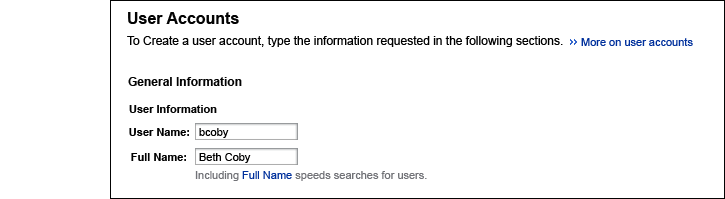
As shown in the preceding example, inline help can consist of:
Inline help provides brief assistance to users, both where they need it and when they need it. Often, inline help is appropriate for windows whose content might confuse most new users or infrequent users. Inline help complements an application's other types of user assistance, for example, tool tips, error messages, labels on fields, and help displayed in pop-up windows. Inline help works best when the labels of UI elements, such as fields and controls, are descriptive and precise.
Note that in the previous example there are also links in the inline help, which enable the writer to provide additional help. To learn about these links, see 11.1.4 Including Links in Inline Help.
Before adding inline help to an application, you need to determine which parts of the application, if any, need inline help. The following guidelines help you decide whether to provide inline help. They also help you provide inline help correctly.
 Before completing your UI design, consult a technical writer,
a UI designer, or both, for ideas on where users might need inline help.
By finding out early which parts of your design need inline help, you can
sometimes eliminate that need by relabeling those parts or redesigning them.
Before providing inline help in a page, verify that you cannot redesign the page
to eliminate the need for inline help.
Before completing your UI design, consult a technical writer,
a UI designer, or both, for ideas on where users might need inline help.
By finding out early which parts of your design need inline help, you can
sometimes eliminate that need by relabeling those parts or redesigning them.
Before providing inline help in a page, verify that you cannot redesign the page
to eliminate the need for inline help.
 For each entry field that requests text, consider providing inline help
if users might not know the valid format or values for that text.
In the inline help, list the valid formats,
show at least one example value, or do both. For example, inline help for a password field might be:
"Passwords must be at least 10 characters long".
For each entry field that requests text, consider providing inline help
if users might not know the valid format or values for that text.
In the inline help, list the valid formats,
show at least one example value, or do both. For example, inline help for a password field might be:
"Passwords must be at least 10 characters long".
 In wizards
and other pop-up windows with help
in their left pane, add inline help to the right pane only if the left-pane help does not suffice.
For example, left-pane help usually would not suffice if users need help about one or more input fields.
Those fields would need inline help.
In wizards
and other pop-up windows with help
in their left pane, add inline help to the right pane only if the left-pane help does not suffice.
For example, left-pane help usually would not suffice if users need help about one or more input fields.
Those fields would need inline help.
 Test the usability and accessibility of your inline help.
If you redesign a page that has inline help, verify that the inline help remains accurate and necessary.
Test the usability and accessibility of your inline help.
If you redesign a page that has inline help, verify that the inline help remains accurate and necessary.
The position of a page's inline help enables users to determine which inline help applies to which UI element.
 Place
inline help near the UI elements to which it relates. Follow these guidelines:
Place
inline help near the UI elements to which it relates. Follow these guidelines:
| Scope of the Inline Help | Correct Position |
|---|---|
| An entire page of an application | The top of the page, directly below
the title. Place the inline help in that position even if the page has controls for page actions or has
jump-to links for navigating to sections of the page. However, inline help is rarely necessary
before those elements. If
the page has no title, place the inline help directly below the page's masthead.
The inline help text can extend all the way from the left to the right margin of the page. |
| A page section that is titled or otherwise visually separated | The top of that section, directly below the title or separator. |
| A single entry field | Directly below the field. |
Among the factors that affect the usability of inline help is its formatting, especially, its font face, weight, size, and color. Use the Sun Common UI Component Library (in open source, the Project Woodstock components) to obtain the correct font style for inline help (see Appendix A, Component Library Information).
 In inline help, use color only to highlight links. (The components for
inline help in the Component Library automatically highlight links,
using color.) For accessibility and other usability concerns, avoid
using:
In inline help, use color only to highlight links. (The components for
inline help in the Component Library automatically highlight links,
using color.) For accessibility and other usability concerns, avoid
using:
 Do not place
tables or inline images in inline help.
Do not place
tables or inline images in inline help.
 Do not explicitly format the line length or font size of inline help.
If you are using the Component Library to create your inline help, allow the
components to format the help automatically.
Do not explicitly format the line length or font size of inline help.
If you are using the Component Library to create your inline help, allow the
components to format the help automatically.
 In inline help, avoid unnecessary line breaks and other layout techniques that waste vertical space.
In inline help, avoid unnecessary line breaks and other layout techniques that waste vertical space.
One good way to keep inline help brief is to include "inline-help links," which are links within inline help. Inline help can consist of:
However, depending on the type of window and page, inline-help links might not be appropriate. For example, inline-help links are rarely appropriate in wizards. Before inserting links into your inline help, read the sections of this chapter relating to the type of window and page that you are working with.
When providing inline-help links, follow these guidelines:
 In your application's overview of accessibility (see Appendix
D, Accessibility), inform users that links in inline help open a new
window. In addition, explain that links to additional help often begin with the word
"More".
In your application's overview of accessibility (see Appendix
D, Accessibility), inform users that links in inline help open a new
window. In addition, explain that links to additional help often begin with the word
"More".
 In inline help, do not display instructions that consist of
more than three steps. Instead, link to those instructions. For example, "To set
the properties of this object, follow these instructions".Also, do not use a vertical list for instructions consisting of fewer than three steps -- just give those instructions inline.
In inline help, do not display instructions that consist of
more than three steps. Instead, link to those instructions. For example, "To set
the properties of this object, follow these instructions".Also, do not use a vertical list for instructions consisting of fewer than three steps -- just give those instructions inline.
 For readability and accessibility, ensure that no two inline-help links are touching each other.
For readability and accessibility, ensure that no two inline-help links are touching each other.
 In inline help, include a link only if that link's target is available whenever your application runs. For example,
in inline help for a reusable UI component, such as a file chooser, provide a link to a particular help topic only if
the file containing that topic is always accessible from the user's system. Provide links to the Web only if you can be
sure that users have a connection to the Internet at that time.
In inline help, include a link only if that link's target is available whenever your application runs. For example,
in inline help for a reusable UI component, such as a file chooser, provide a link to a particular help topic only if
the file containing that topic is always accessible from the user's system. Provide links to the Web only if you can be
sure that users have a connection to the Internet at that time.
 If you link to a help topic from inline help, insert anchors in that help topic to ensure that the appropriate section
is displayed at the top of the Help window's content area.
If you link to a help topic from inline help, insert anchors in that help topic to ensure that the appropriate section
is displayed at the top of the Help window's content area.
 Do not include links in left-pane help.
Do not include links in left-pane help.
 Provide links in inline help
only to display information that is too large to display inline.
Ensure that each link's label precisely describes that link's target. For example, do not use the label "Help,"
which is too general. Instead, use a more specific label, such as "More password requirements".
Provide links in inline help
only to display information that is too large to display inline.
Ensure that each link's label precisely describes that link's target. For example, do not use the label "Help,"
which is too general. Instead, use a more specific label, such as "More password requirements".
 In inline help, avoid including links to display just one additional line of text. Instead, try to fit that additional
text inline. Alternatively, replace the inline help with a different type of help. For example, in certain pop-up windows,
you might replace inline help with left-pane help.
In inline help, avoid including links to display just one additional line of text. Instead, try to fit that additional
text inline. Alternatively, replace the inline help with a different type of help. For example, in certain pop-up windows,
you might replace inline help with left-pane help.
 If a passage of inline help is too long, create a title for it, and
then display the title as inline help that links to the relevant help
topic. For example, if a password field had lengthy requirements, you
could provide a link labeled "Password requirements" instead of listing
the requirements inline.
If a passage of inline help is too long, create a title for it, and
then display the title as inline help that links to the relevant help
topic. For example, if a password field had lengthy requirements, you
could provide a link labeled "Password requirements" instead of listing
the requirements inline.
 If
your inline help includes links to definitions of terms, provide those definitions
in a glossary. List that glossary as a first-level heading in the table of contents for your application's online help.
For an example, see the example Help window in 11.2.1 Layout and Behavior of the Help Window.
If
your inline help includes links to definitions of terms, provide those definitions
in a glossary. List that glossary as a first-level heading in the table of contents for your application's online help.
For an example, see the example Help window in 11.2.1 Layout and Behavior of the Help Window.
 In inline help, when linking from a
term to its definition, ensure that the link
opens that definition at the top of the target window's text area.
In inline help, when linking from a
term to its definition, ensure that the link
opens that definition at the top of the target window's text area.
 If a pop-up window has both inline help
and left-pane help, do not include links in the inline help.
Instead, consider either of the following approaches:
If a pop-up window has both inline help
and left-pane help, do not include links in the inline help.
Instead, consider either of the following approaches:
 If a link ends a passage of inline help and provides additional information
about that passage, place a More graphic ()
at the beginning of the link, as shown here:
If a link ends a passage of inline help and provides additional information
about that passage, place a More graphic ()
at the beginning of the link, as shown here:
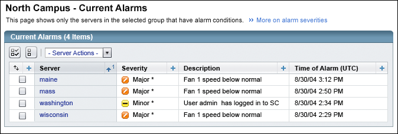
 Do not place a More graphic ()
before links in a phrase that includes nonlinked text.
Do not place a More graphic ()
before links in a phrase that includes nonlinked text.
 When providing a link that begins with a More graphic ()
ensure that the link's label is specific. Do not use the word "More" alone as a link label.
When providing a link that begins with a More graphic ()
ensure that the link's label is specific. Do not use the word "More" alone as a link label.
 For inline-help links, make the link's tool tip as specific as possible. For example, in
the preceding figure, the tool tip for the "More on alarm severities" link
might be:
For inline-help links, make the link's tool tip as specific as possible. For example, in
the preceding figure, the tool tip for the "More on alarm severities" link
might be:
Shows more help about alarm severities. (Opens a New Window)
When writing inline help, follow these guidelines:
 Ensure
that your inline help consists of only text and text links. Ensure that it does not include buttons or other UI controls.
Ensure
that your inline help consists of only text and text links. Ensure that it does not include buttons or other UI controls.
 In
inline help, never use the phrase "click here".
In
inline help, never use the phrase "click here".
 To provide help on an entry field, do not make the field's label a link. Instead, provide inline help below that field,
placing links in the inline help if needed.
To provide help on an entry field, do not make the field's label a link. Instead, provide inline help below that field,
placing links in the inline help if needed.
 In
inline help, provide only information that the rest of the UI
cannot, or does not, provide. State only what is not clearly visible or otherwise
obvious. For example, for labeled fields,
provide inline help only to add information that the label cannot convey.
In
inline help, provide only information that the rest of the UI
cannot, or does not, provide. State only what is not clearly visible or otherwise
obvious. For example, for labeled fields,
provide inline help only to add information that the label cannot convey.
 Provide page inline help only if the user's task is not obvious. Do not provide page inline help
for each page of your application merely to achieve consistent appearance.
Provide page inline help only if the user's task is not obvious. Do not provide page inline help
for each page of your application merely to achieve consistent appearance.
 Ensure that mastheads contain no inline help, other than the Help link in main window
mastheads. For more information about main window mastheads, see 4.1 Main Window Masthead.
Ensure that mastheads contain no inline help, other than the Help link in main window
mastheads. For more information about main window mastheads, see 4.1 Main Window Masthead.
 Ensure that
your application's inline help is localizable, accessible, and grammatically correct. For accessibility, follow the guidelines in Appendix D, Accessibility.
Ensure that
your application's inline help is localizable, accessible, and grammatically correct. For accessibility, follow the guidelines in Appendix D, Accessibility.
 Use sentence capitalization for all inline help. For more information, see
2.5 Text Capitalization. When referencing
objects on the page, button names, for example, match their capitalization.
Use sentence capitalization for all inline help. For more information, see
2.5 Text Capitalization. When referencing
objects on the page, button names, for example, match their capitalization.
 When writing
instructions, start with what the reader can do, and then describe how to do it. For example:
When writing
instructions, start with what the reader can do, and then describe how to do it. For example:
"To stop the print job, click Stop."
 When punctuating inline help, follow these guidelines:
When punctuating inline help, follow these guidelines:
 When providing inline help,
limit its length by following these suggestions:
When providing inline help,
limit its length by following these suggestions:
| Scope of the Inline Help | Recommended Length |
|---|---|
| An entire page of an application | One to three short sentences |
| A page section that is titled or otherwise visually separated | One short sentence |
| A single entry field | One short sentence or, preferably, one phrase |
 In instructions, use the imperative whenever possible.
In instructions, use the imperative whenever possible.
INCORRECT: You can stop the print job by clicking Stop.
CORRECT: To stop the print job, click Stop.
 Use
precise verbs. For example, do not use "specify" if "choose," "type," or some other verb is clearer. In addition, use the verb "select" only where
it is not ambiguous. In UIs, "select" is not an exact synonym for "choose".
"Select" means "to designate one or more UI objects, typically for a subsequent action". For example, a user might
select several files so that they can all be moved as a set. In contrast, a user might choose a command from a menu.
Choosing a menu command does not designate it for a subsequent action, so "choose" is the correct verb.
Use
precise verbs. For example, do not use "specify" if "choose," "type," or some other verb is clearer. In addition, use the verb "select" only where
it is not ambiguous. In UIs, "select" is not an exact synonym for "choose".
"Select" means "to designate one or more UI objects, typically for a subsequent action". For example, a user might
select several files so that they can all be moved as a set. In contrast, a user might choose a command from a menu.
Choosing a menu command does not designate it for a subsequent action, so "choose" is the correct verb.
 Do not
abbreviate "that is" and "for example" as "i.e". and "e.g." Spell out those terms, or, better yet, omit them.
If a passage of inline help consists solely of examples, listed in a series, then start the passage with the word
"Examples," followed by a colon and a space character, as shown here:
Do not
abbreviate "that is" and "for example" as "i.e". and "e.g." Spell out those terms, or, better yet, omit them.
If a passage of inline help consists solely of examples, listed in a series, then start the passage with the word
"Examples," followed by a colon and a space character, as shown here:
Examples: AND, OR, NOT
Not all help is brief enough to display on the page where users perform their task. To display more help, applications can open the Help window, as described in the following sections.
The Help window is a pop-up window that opens and displays help when users click:
Here is an example of the Help window:
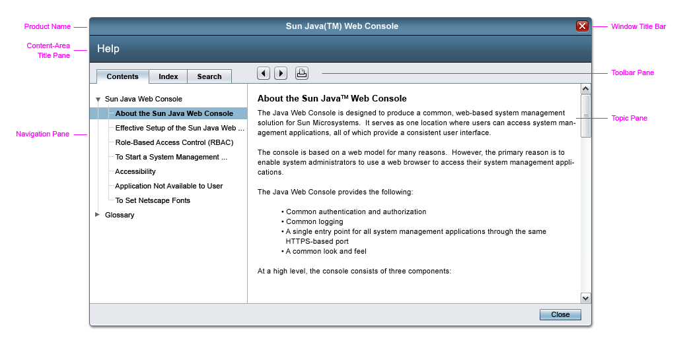
Note: In this chapter's examples of the Help window, the help topics are intended only to show the window's UI elements. The topics are not necessarily from actual Sun products.
After the Help window first opens, it stays open until a user explicitly closes it.
Users can minimize the Help window. If a user minimizes the Help window, the Help window is restored when the user either:
To understand the Help window better, you might need information on the following topics:
For information on how to provide Help-window help correctly, see 11.2.2 Providing Access to Help-Window Help.
 Ensure that your application displays only one Help window.
For example, in a main window, a user might click the masthead's Help link, navigate to another page of the application
without closing the Help window, and then click the masthead's Help link again. The help for
that new page should be displayed in the existing Help window.
Ensure that your application displays only one Help window.
For example, in a main window, a user might click the masthead's Help link, navigate to another page of the application
without closing the Help window, and then click the masthead's Help link again. The help for
that new page should be displayed in the existing Help window.
The Help window has the following parts, starting from the top:
As shown in the preceding example, the Help window's navigation and
topic panes are separated by a moveable vertical divider.
The divider enables users to widen one pane while narrowing the other,
without affecting the window's overall width.
The X at the top right of the
window, and the Close button at the bottom right, both provide the same
function, to close the window.
When the Help window is initially displayed, it is 750 pixels wide and 500 pixels tall, but users can resize the window. If a user resizes the Help window, the window behaves as follows:
 In the Help window, ensure that the window title bar conforms
to the guidelines for pop-up windows. For more information, see
Chapter 3, Windows and Pages.
In the Help window, ensure that the window title bar conforms
to the guidelines for pop-up windows. For more information, see
Chapter 3, Windows and Pages.
 In the Help window, ensure that the content-area title pane contains only the content area's title, which is "Help".
In addition, ensure that the title is text, not a graphic, so that it can be translated.
In the Help window, ensure that the content-area title pane contains only the content area's title, which is "Help".
In addition, ensure that the title is text, not a graphic, so that it can be translated.
The navigation pane is a tabbed pane with tabs labeled as follows, in left-to-right order:
Note:The tabs of the Help window's navigation pane differ visually from tabs described elsewhere in these Guidelines (see 5.2 Tabbed Panes Details for more information).
If the navigation pane's content extends beyond the pane, horizontal scrollbars, vertical scrollbars, or both are displayed in the pane. Text in the navigation pane does not wrap. Therefore, try to name navigational elements to avoid these scrollbars.
Contents Tab:
The Contents tab is the far-left tab of the Help window's navigation pane. By default, the Contents tab
is the pane's active tab, as shown in the preceding example.
Within the Contents tab, applications display their Table of Contents (TOC) as a collapsible navigation tree.
Each node of the tree includes a text link to a help topic. Users can display that topic
in the Help window's topic pane by clicking the link. If a user clicks a link in the TOC, the Help window
highlights that link's node in the TOC and displays the link's target (the text of a help topic) in the topic pane (the
right pane).
In the TOC, all container nodes are open by default. (Container nodes in the contents tab contain subtopics.) However, users can close each container node individually by clicking that node's navigation control.
Unlike nodes in typical navigation trees, nodes in a TOC have no graphic. Another difference between a TOC and typical navigation trees is that the background color of a TOC is white, as shown in the preceding example. For more information about container nodes, see 5.1.4 Tree.
 Divide help into multiple topics. Include each major topic, with its subtopics, in its own container node.
Divide help into multiple topics. Include each major topic, with its subtopics, in its own container node.
Index Tab:
The Index tab is the middle tab of the Help window's
navigation pane, as shown in the following example:
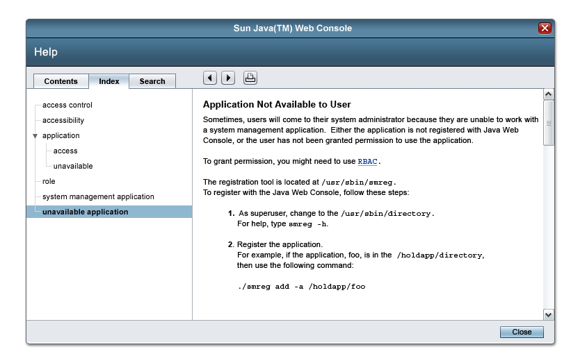
The Index tab enables users to:
Typically, the only help topics indexed are for the application from which the Help window was opened.
The Index tab is inactive until a user clicks it, making it the active tab. Activating the Index tab or deactivating it does not affect the Help window's topic pane.
The Index tab displays an index as a navigation tree. Each node of the tree is either:
In indexes, all container nodes are open by default. However, users can close each container node individually by clicking that node's navigation control.
Unlike nodes in typical navigation trees, nodes in indexes have no graphic. Another difference between indexes and typical navigation trees is that the background color of indexes is white, as shown in the preceding example. For more information about container nodes, see 5.1.4 Tree.
Indexes have vertical and horizontal scrollbars, but only if the index is longer or wider than the navigation pane.
The index entry is highlighted when the user clicks the link, and the associated help topic is displayed.After a user clicks an index entry, thereby displaying the corresponding help text in the topic pane, that text remains displayed until the user either:
If a user switches among the tabs, the highlighted selection in the navigation pane is removed, so there is no conflict between what is selected in the tab and what is displayed in the topic pane. For example, if a user clicks an item in the index (and displays its topic) and then switches to the Table of Contents, the Table of Contents would have no highlight when initially displayed.
Maintaining an appropriate selection (with highlighting) when switching tabs is something that might be addressed in a future release of the guidelines and this component.
Search Tab:
The Search tab is the far-right tab of the Help window's navigation pane, as shown in the following example:
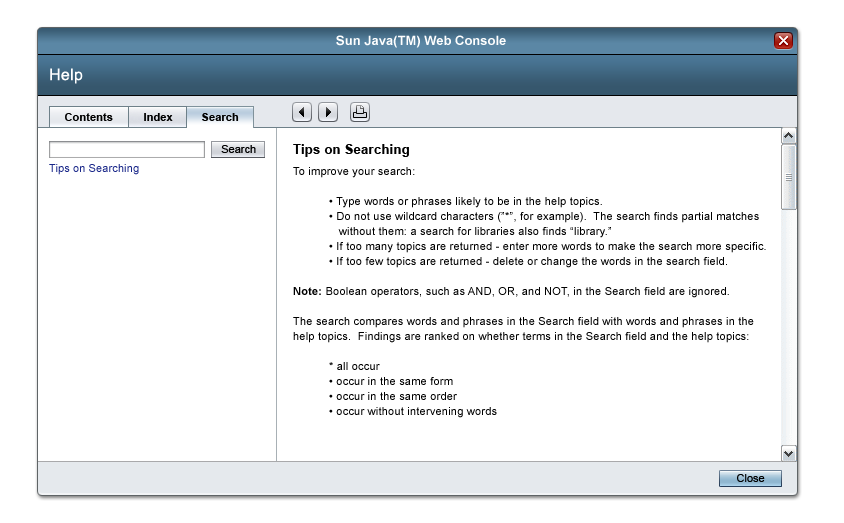
The Search tab enables users to type a query and then view the titles of help topics whose full text contains matches for that query. The only topics searched are those of the application from which the Help window was opened.
As shown in the preceding example, the UI elements of the Search tab are:
A horizontal rule separates the Results text area from the UI elements above it.
The Search tab is inactive until a user clicks it, making it the active tab. Activating the Search tab does not affect the Help window's topic pane (the right pane). However, if a user clicks a link in the Search tab, the corresponding help text is displayed in the topic pane, as shown in the following example:
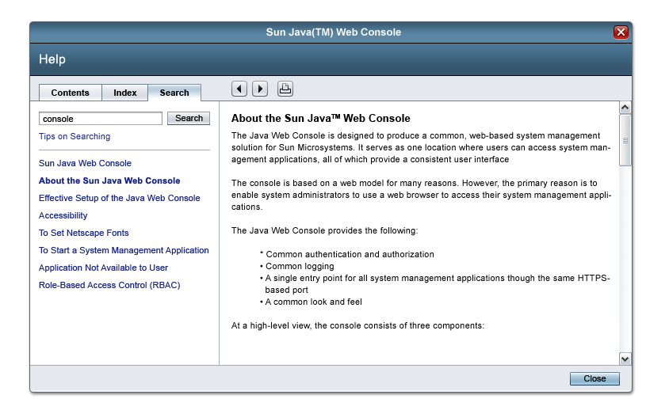
The link that the user clicks can be either:
On the Search tab, links are the only UI controls that affect the Help window's topic pane.
The Search input field is where users type their query. The Search input field is blank until a user starts typing in it. If a user's query is too long to display in the input field, the query scrolls to the left as the user types. If the user moves the cursor back, the query scrolls to the right when the cursor reaches the left border of the input field.
The Search input field has no visible label but does have an HTML title attribute for accessibility. The value of that title attribute is "Search input field". For more information about the HTML title attribute, see the description of it on the World Wide Web Consortium's web site at:
http://www.w3.org/TR/REC-html40/struct/global.html#adef-title
The Search input field's inline help consists of a link labeled "Tips on Searching". Clicking the link opens the corresponding help text in the topic pane, as shown in the following example:
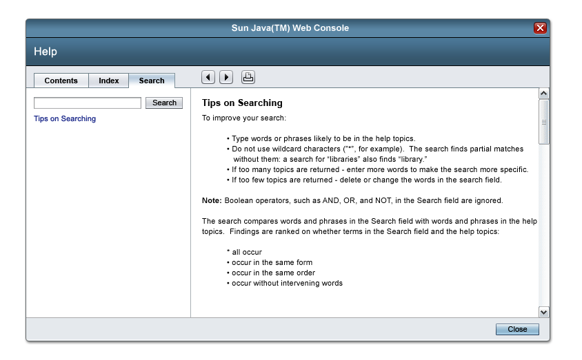
 The inline help link's corresponding help text is
not a "help topic" in the strict sense. It is not included in the
Help window's table of contents or in the results of queries.
The inline help link's corresponding help text is
not a "help topic" in the strict sense. It is not included in the
Help window's table of contents or in the results of queries.
Directly to the right of the Search input field is a right-justified command button labeled "Search". Clicking the Search button performs the search. Users can also perform a search by pressing Return or Enter while input focus is in the Search input field.
If a user clicks the Search button while the Search input field is empty, a message is displayed directly in the Results text area, top justified. That message is "The search found no results". The same message is displayed if no help topics match the query that a user types, as shown in the following example:
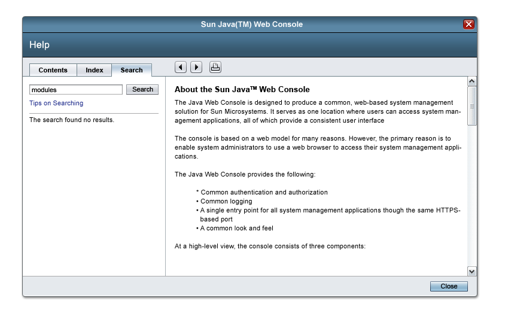
If one or more help topics match the user's query, the titles of those topics are listed in the Results text area, which occupies the remaining portion of the Search tab.
Until a user performs a first query, the Results text area is blank. If the user performs a query for which there are matches:
Each title in the list is a link. Clicking a title displays the corresponding help topic in the Help window's topic pane. Except for clicking the title of a help topic or clicking a link in inline help, user actions performed in the Search tab do not affect the Help window's topic pane.
Search results remain displayed until a user performs a subsequent search. The same is true of messages displayed in the Results text area. Search results and messages remain displayed even if a user deactivates the Search tab and then reactivates it. To deactivate the Search tab, users activate the Contents tab or the Index tab.
The Results text area displays vertical and horizontal scrollbars but only when the list of titles is longer or wider than the text area.
The topic pane consists of a horizontal toolbar pane above a text area, as shown in the preceding example. The toolbar pane never scrolls; it always remains visible in the window.
The toolbar buttons are, from left to right:
These buttons are all icons.
The following table shows the tool tip for each button:
| Button Name | Tool Tip |
|---|---|
| Back | Go Back |
| Forward | Go Forward |
If the text pane's content is longer than the text pane, vertical scrollbars are displayed in the text pane as needed. If the content is wider than the text pane, text wraps to the pane's current width. If graphics extend beyond the pane, the pane displays horizontal scrollbars as needed.
The topic pane is never blank. It always displays a user's most recently chosen page until the user requests a different page and that new page is displayed. When the Help window first opens, the topic pane displays the page associated with the link that opened the Help window.
When providing access to Help-window help, follow these guidelines:
 In main windows, ensure that the masthead's Help link opens
the Help window and displays information specific to the main
window, typically about its content area. For information about
the content area of windows, see Chapter 3, Windows and Pages.
In main windows, ensure that the masthead's Help link opens
the Help window and displays information specific to the main
window, typically about its content area. For information about
the content area of windows, see Chapter 3, Windows and Pages.
 When writing a help topic about a particular page of an application, keep in mind that users might not have
that page displayed while reading the help topic.
When writing a help topic about a particular page of an application, keep in mind that users might not have
that page displayed while reading the help topic.
 In main windows with tabs or panes, ensure that the masthead's
Help link is context-sensitive to the user's current tab or pane.
If necessary, place anchors in your help file so that you can
link directly to sections about each tab or pane.
In main windows with tabs or panes, ensure that the masthead's
Help link is context-sensitive to the user's current tab or pane.
If necessary, place anchors in your help file so that you can
link directly to sections about each tab or pane.
 In indexes, provide no more than three levels of entries. If possible, provide no more than two levels.
In indexes, provide no more than three levels of entries. If possible, provide no more than two levels.
 Keep index entries short, so that users need not resize the navigation pane or scroll it horizontally.
Keep index entries short, so that users need not resize the navigation pane or scroll it horizontally.
 Do not include page numbers in index entries.
Do not include page numbers in index entries.
 Use the Help window only to display help topics that get installed with your application. To display books,
external web sites, or other external information, open a window other than the Help window.
Use the Help window only to display help topics that get installed with your application. To display books,
external web sites, or other external information, open a window other than the Help window.
 When you map topic IDs to the URLs of your help set,
ensure that each topic ID would remain unique even if
your help set were merged with another help set.
(For information about ID mapping and
merged help sets, see the documentation for Sun's
JavaHelpTM software.)
When you map topic IDs to the URLs of your help set,
ensure that each topic ID would remain unique even if
your help set were merged with another help set.
(For information about ID mapping and
merged help sets, see the documentation for Sun's
JavaHelpTM software.)
Some applications open pop-up windows used as dialog pages or wizards. Some of these windows are divided into left and right panes, as shown here:
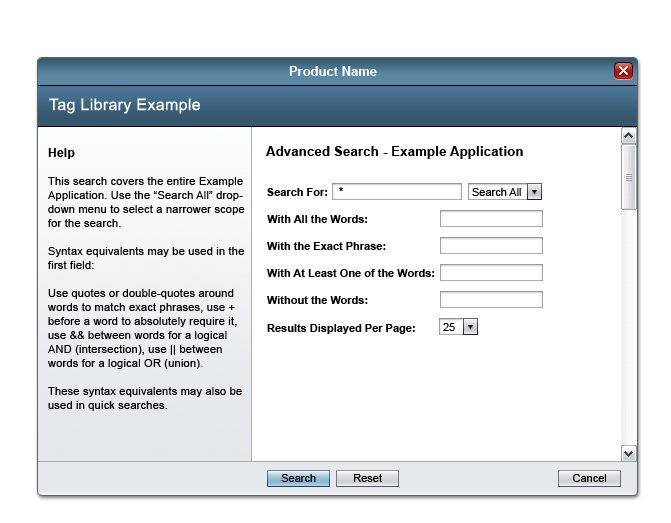
In these pop-up windows, the left pane can display help about the window. Help displayed in this way is called "left-pane help". By default, the left pane, also known as the "help pane," occupies 35 percent of the entire window's width. Users can resize the entire window, causing the left and right panes to change their size while retaining their proportions relative to each other.
 Provide left-pane help only in pop-up windows that display either:
Provide left-pane help only in pop-up windows that display either:
 In wizards where the left pane can display information about each of the steps, display help in the left pane
by providing a tab labeled "Help," as shown here:
In wizards where the left pane can display information about each of the steps, display help in the left pane
by providing a tab labeled "Help," as shown here:
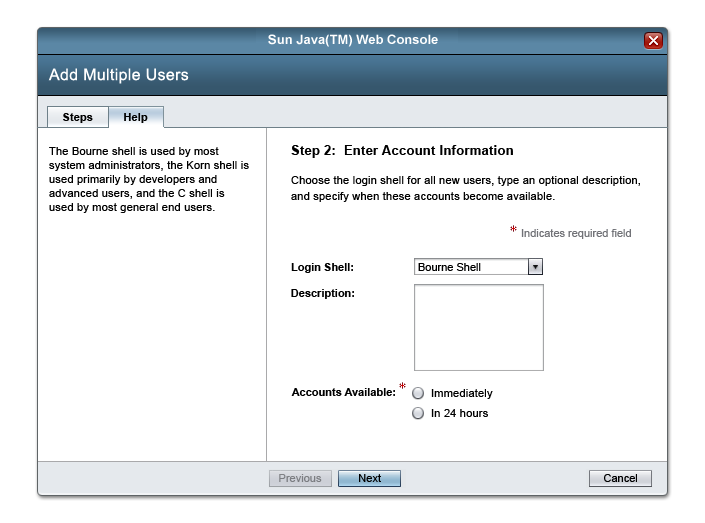
 Ensure that, by default, the Steps tab is the active tab.
For more information about providing left-pane help in wizards, see Chapter 13, Wizards.
Ensure that, by default, the Steps tab is the active tab.
For more information about providing left-pane help in wizards, see Chapter 13, Wizards.
 If the wizard does not need help on any step, remove both tabs
from the wizard and show just the Steps in the left pane, as shown here:
If the wizard does not need help on any step, remove both tabs
from the wizard and show just the Steps in the left pane, as shown here:
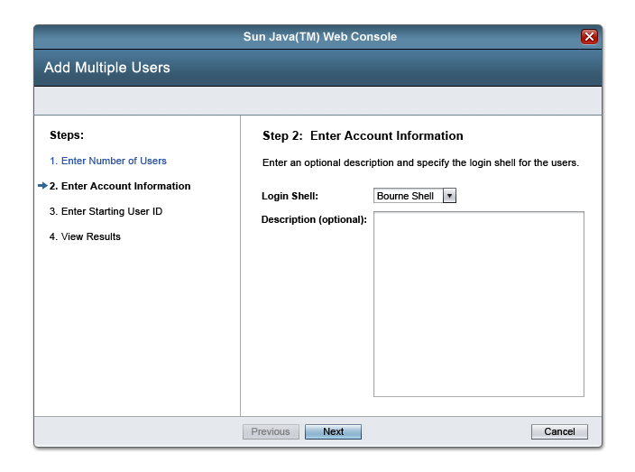
 If one or more steps of a wizard need help, the help tab should always be
available (even if the user might
never visit the step that needs
help because the wizard has branched). For individual steps that do not require left-pane help, the
writer should provide text, to indicate that this is not just blank
space. Most often this can be useful
information about the right side pane. In the rare case where there is
absolutely no information to provide, the text can say something like
"Click Next to proceed". or "Complete entries and continue to the next
step".
If one or more steps of a wizard need help, the help tab should always be
available (even if the user might
never visit the step that needs
help because the wizard has branched). For individual steps that do not require left-pane help, the
writer should provide text, to indicate that this is not just blank
space. Most often this can be useful
information about the right side pane. In the rare case where there is
absolutely no information to provide, the text can say something like
"Click Next to proceed". or "Complete entries and continue to the next
step".
You can provide help for your application's pages in one or more of the following ways:
This section helps you choose the best way to provide help other than tool tips. For guidance on providing tool tips, see 11.5 Tool Tips.
The best way to provide help depends on factors such as whether:
All main windows have a Help link in their masthead. That link opens the Help window, as described in 11.2 Help-Window Help. Optionally, pages in main windows can include inline help.
 Do not provide left-pane help in main windows.
Do not provide left-pane help in main windows.
 In main windows where users likely need help, provide an inline-help link to display the same page
that users can open using the Help link in the masthead. Ensure that the inline-help link's label is descriptive and includes
the phrase "about this page" or a more specific phrase. For example, the link's label might be: "For instructions,
read the help topic about this page".
In main windows where users likely need help, provide an inline-help link to display the same page
that users can open using the Help link in the masthead. Ensure that the inline-help link's label is descriptive and includes
the phrase "about this page" or a more specific phrase. For example, the link's label might be: "For instructions,
read the help topic about this page".
Pages in pop-up windows can include inline help, left-pane help, or both. In pop-up windows, no page has a Help link in its masthead.
 In pop-up windows, provide help only if users need it.
In pop-up windows, provide help only if users need it.
 When providing help for a pop-up window:
When providing help for a pop-up window:
Tool tips are small rectangles of text that provide a short description of a UI element or area. On the web, tool tips can be applied to elements such as icons, entry fields, and buttons.
In HTML, tool tips are created by specifying title text for the HTML title attribute.
This is how a tool tip, produced with title text, would look when the user mouses over an image:
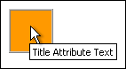
For more information, see the description of the HTML title attribute on the World Wide Web Consortium's web site at:
http://www.w3.org/TR/REC-html40/struct/global.html#adef-title
Note: There is a difference between a tool tip, produced with the HTML title attribute, and alternative text, produced with the HTML alt attribute. Alt text is required to provide a description of every graphic. It is imperative that it be present for visually-impaired users who use screen readers. It is also useful where graphics are not rendered, for example, when users have image loading turned off. In such situations, Alt text enables users to selectively download graphics. Use the HTML alt attribute to define Alt text
for all images, including
decorative images. Use both the HTML alt attribute and the HTML title
attribute for all interactive graphics
and for graphics that users might not understand without a description. For example, any clickable icon
(such as an alarm icon or a pagination arrow) should have
both the HTML alt and title attributes set.
In contrast, the hierarchy lines of a tree control should use only the alt attribute.
Use the HTML alt attribute to define Alt text
for all images, including
decorative images. Use both the HTML alt attribute and the HTML title
attribute for all interactive graphics
and for graphics that users might not understand without a description. For example, any clickable icon
(such as an alarm icon or a pagination arrow) should have
both the HTML alt and title attributes set.
In contrast, the hierarchy lines of a tree control should use only the alt attribute.
 Write the HTML Alt text so that it concisely
states the function of the image.
Write the HTML Alt text so that it concisely
states the function of the image.
 Do not use tool tips as a substitute for other forms of
help.
Do not use tool tips as a substitute for other forms of
help.
 Provide a tool tip for each button or link that opens a new window. Ensure that the tool tip
ends with this parenthetical phrase: (Opens a New Window). Use headline capitalization for
the parenthetical phrase, regardless of the tool tip's length.
Provide a tool tip for each button or link that opens a new window. Ensure that the tool tip
ends with this parenthetical phrase: (Opens a New Window). Use headline capitalization for
the parenthetical phrase, regardless of the tool tip's length.
EXAMPLE: Print the first column of this table. (Opens a New Window)
 Provide a tool tip for each icon and graphical button (even those that do not open a new window).
Provide a tool tip for each icon and graphical button (even those that do not open a new window).
 In tool tips that begin with a verb, use the imperative form, if possible:
In tool tips that begin with a verb, use the imperative form, if possible:
USE: Print Table Row
NOT: Prints Table Row
 A tool tip for a graphical element should describe that element; it should not provide other
help about an application. The HTML Alt text for images should reflect that distinction.
A tool tip for a graphical element should describe that element; it should not provide other
help about an application. The HTML Alt text for images should reflect that distinction.
In most browsers, tool tips are displayed for only a few seconds. Sighted users need to read a tool tip within that brief time.
 Keep the length of tool tip text as short as possible. For
accessibility, ensure that no tool tip is longer than 150 characters
when displayed in English.
Keep the length of tool tip text as short as possible. For
accessibility, ensure that no tool tip is longer than 150 characters
when displayed in English.
 To avoid confusion, do not use terms such as "Back," "Home," or
"Forward" in tool tips. An exception is any tool tip for a control that
behaves exactly the same as the browser's control labeled with that
term.
To avoid confusion, do not use terms such as "Back," "Home," or
"Forward" in tool tips. An exception is any tool tip for a control that
behaves exactly the same as the browser's control labeled with that
term.
The HTML longdesc attribute, part of HTML 4.01 and supported by some browsers, is intended for users who use screen readers. For elements other than text, you can use the longdesc attribute to provide a longer description than can otherwise be provided with the HTML alt attribute. However, not all screen readers recognize the longdesc attribute. Unlike Alt text, the Longdesc text is presented only when users using a screen reader explicitly request more information.
In the following image, the HTML alt attribute is "Disk Partitions". The HTML longdesc attribute refers to the file "chart.html," which reads as follows:
This is a visual indication of the partitioning of a disk. Each slice on the disk appears with a width relative to its space on the disk. Slice 2 occupies the whole disk. There is some free space between slices 1 and 3. Free space appears in white, while used space appears in a pink color.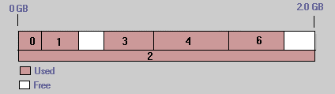
 When a short text equivalent does not adequately convey the function
or role of an image, provide additional information in a file designated
by the HTML longdesc attribute.
When a short text equivalent does not adequately convey the function
or role of an image, provide additional information in a file designated
by the HTML longdesc attribute.
 Provide the HTML longdesc attribute for an
image if the image conveys information
that is too long to present by way of
the HTML alt attribute or the HTML title attribute.
Provide the HTML longdesc attribute for an
image if the image conveys information
that is too long to present by way of
the HTML alt attribute or the HTML title attribute.
For information about tool tips for the Sun icons, glyphs, and graphics used within the components see the Sun Common UI Component Library (in open source, the Project Woodstock components).
In tree navigation, turners use HTML Alt text and HTML Title text to indicate their expanding and collapsing behavior. Since turners convey much information about the tree state and interaction possibilities, they also use the HTML longdesc attribute to describe to screen reader users how to interact with the turners. They also use the longdesc attribute to describe the state of the tree.
Tree hierarchy lines use the HTML longdesc attribute to indicate their purely visual function. For more information about tree navigation objects, see 5.4.2 Tree Look and Feel.
Some browsers enable users to increase the font size used to display tool tips, even without requiring users to change the browser's other font-size settings. Long tool tips can become unreadable when displayed in a larger font size.
 When creating text for tool tips, make it as brief as possible.
When creating text for tool tips, make it as brief as possible.
 Use headline capitalization for short tool tips. Use sentence capitalization
for longer tool tips. See 2.5 Text Capitalization.
Use headline capitalization for short tool tips. Use sentence capitalization
for longer tool tips. See 2.5 Text Capitalization.
 Make tool tips for disabled icons indicate the disabled state.
Make tool tips for disabled icons indicate the disabled state.
Indicating that an icon is currently disabled is helpful to users. For example: "Go to Next Page (Unavailable)".
Icons are sometimes overlayed with a "badge". A badge is a small graphic superimposed over a corner of an icon, typically to indicate an alarm. Badged icons are often displayed in trees. For more information on badges and alarms, see 5.4.2.1 Alarms.
 If an icon is badged with an alarm (for example, this icon:
If an icon is badged with an alarm (for example, this icon:  ), make its tool tip
indicate both the icon's meaning and its alarmed state. Use brackets around
the portion of the tool tip that indicates the alarmed state. For example:
), make its tool tip
indicate both the icon's meaning and its alarmed state. Use brackets around
the portion of the tool tip that indicates the alarmed state. For example:
This is how a tool tip for an icon with a critical alarm badge would appear:
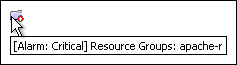
In addition to 9.5.2.1 Direct Table Sorting, the following resources discuss tool tips and describe how to use HTML Alt text:
The Pop-Up Bubble is a user interface element that allows the end user to see context-sensitive information pertinent to a certain area of the screen. The end user hovers (places the mouse pointer) over an object (for example, a label, image, or link) for some time, and a pop-up bubble appears with additional information that is appropriate to that context. Use the pop-up bubble judiciously, however, so that the pop-up bubbles do not interfere with the user's interaction with the page.
 Avoid a situation where the user is unable to move their mouse without unintentionally opening a bubble.
Avoid a situation where the user is unable to move their mouse without unintentionally opening a bubble.
 Limit the number of objects that will generate a bubble to 5 or fewer in a single page.
Limit the number of objects that will generate a bubble to 5 or fewer in a single page.
 Display only one pop-up bubble at a time on a given page.
Display only one pop-up bubble at a time on a given page.
A basic pop-up bubble is comprised of the following elements:
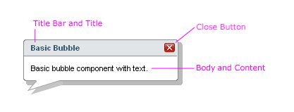
 Include a title bar and left-justified title in the pop-up bubble. The title gives the user some context about the information provided in the pop-up bubble.
Include a title bar and left-justified title in the pop-up bubble. The title gives the user some context about the information provided in the pop-up bubble.
If a title bar is included, the following two guidelines apply:
Include a pop-up bubble title that uses headline capitalization. See 2.5 Text Capitalization.
Include a Close button on the right side of the title bar of the pop-up bubble. This control allows the user to close the pop-up bubble when it is clicked.
 Strive for consistency within your application regarding whether or not a title bar and close button are included in pop-up bubbles.
Strive for consistency within your application regarding whether or not a title bar and close button are included in pop-up bubbles.
 Place the context-sensitive information in the body of the pop-up bubble. This information must pertain to the object that the user hovered over.
Place the context-sensitive information in the body of the pop-up bubble. This information must pertain to the object that the user hovered over.
A pop-up bubble can contain help information, instructions, descriptions, details, or any other useful information that pertains to the object that the user hovered over. The information may be displayed in various formats as well. For instance, the information may be displayed as straight text, label/value pairs, may include images and links, and may even include other user interface elements.
Because of the different kinds of content that can be contained within a pop-up bubble, this user interface element lends itself to situations where field inline help is not sufficient. Some disadvantages of field inline help are that it is limited to text and links, it should be kept very concise, and it can add clutter to a page. However, field inline help does have some important advantages over the pop-up bubble in that it is always visible and does not require a user action for the user to obtain the information. For these reasons, field inline help should be considered before deciding to use the pop-up bubble.
 Use field inline help unless the information content cannot be conveyed adequately inline or when using field inline help would clutter the page. In these situations, the pop-up bubble is a good option for providing the user with context-sensitive information.
Use field inline help unless the information content cannot be conveyed adequately inline or when using field inline help would clutter the page. In these situations, the pop-up bubble is a good option for providing the user with context-sensitive information.
 When additional information is warranted, and field inline help is insufficient, make pop-up bubbles available when the user hovers over text (including labels), links, or images.
When additional information is warranted, and field inline help is insufficient, make pop-up bubbles available when the user hovers over text (including labels), links, or images.
 Display pop-bubbles after the user hovers over an object for 1/2 second.
Display pop-bubbles after the user hovers over an object for 1/2 second.
 Make the size of the pop-up bubble no more than half the size of the main window that it appears over. Typically, however, it will be substantially smaller than that.
Make the size of the pop-up bubble no more than half the size of the main window that it appears over. Typically, however, it will be substantially smaller than that.
 Do not include scrollbars or allow scrolling in the pop-up bubble.
Do not include scrollbars or allow scrolling in the pop-up bubble.
 Position the pop-up bubble to the top right of the invoking object. If the bubble will be obscured by the edge of the browser, reposition it to a more suitable location - top left, bottom right or bottom left, as appropriate.
Position the pop-up bubble to the top right of the invoking object. If the bubble will be obscured by the edge of the browser, reposition it to a more suitable location - top left, bottom right or bottom left, as appropriate.
Below is an example of a pop-up bubble displayed just above and to the right of a link object.
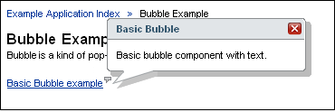
 Do not make pop-up bubbles available on components themselves. Make the pop-up bubble available for a component's label instead. For example, make a pop-up bubble available for a text field's label instead of making it available when the user hovers over the text field itself. This way, the availability of a pop-up bubble does not interfere with the interaction of the user with the component.
Do not make pop-up bubbles available on components themselves. Make the pop-up bubble available for a component's label instead. For example, make a pop-up bubble available for a text field's label instead of making it available when the user hovers over the text field itself. This way, the availability of a pop-up bubble does not interfere with the interaction of the user with the component.
 Place a pop-up bubble icon, , to the top right of labels, links, and other text to indicate that a pop-up bubble is available. When the user hovers over this icon, display the same pop-up bubble that is available for the object.
Place a pop-up bubble icon, , to the top right of labels, links, and other text to indicate that a pop-up bubble is available. When the user hovers over this icon, display the same pop-up bubble that is available for the object.
 Images which have bubbles should display the pop-up bubble icon when users would not expect this additional information to be provided (expecting to only find a tool-tip when hovering).
Images which have bubbles should display the pop-up bubble icon when users would not expect this additional information to be provided (expecting to only find a tool-tip when hovering).
 If a pop-up bubble is available for a label that is also marked with a required field indicator (see 7.3.2 Editable Text Fields), place the pop-up-bubble icon before the required field indicator.
If a pop-up bubble is available for a label that is also marked with a required field indicator (see 7.3.2 Editable Text Fields), place the pop-up-bubble icon before the required field indicator.
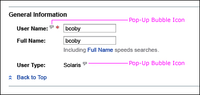
 Continue to display the pop-up bubble as long as the user keeps the mouse pointer within the pop-up bubble or over the object that invoked the bubble.
Continue to display the pop-up bubble as long as the user keeps the mouse pointer within the pop-up bubble or over the object that invoked the bubble.
 Dismiss the pop-up bubble when any of the following occur:
Dismiss the pop-up bubble when any of the following occur:
 Do not include large or complex user interface elements such as an add-and-remove element or table within the body of the pop-up bubble. See Chapter 8, Complex Elements and Chapter 9, Tables for more information about complex elements and tables.
Do not include large or complex user interface elements such as an add-and-remove element or table within the body of the pop-up bubble. See Chapter 8, Complex Elements and Chapter 9, Tables for more information about complex elements and tables.
 Include simple user interface elements within the body of the pop-up bubble when it is appropriate. See Chapter 7, Simple Elements for more information about simple user interface elements.
Include simple user interface elements within the body of the pop-up bubble when it is appropriate. See Chapter 7, Simple Elements for more information about simple user interface elements.
 Place a link beginning with "More" at the end of the pop-up bubble text if the user needs to see more information. When the "More" link is clicked open a new window that presents the additional information. Typically, clicking the "More" link will display the associated section of the online help.
Place a link beginning with "More" at the end of the pop-up bubble text if the user needs to see more information. When the "More" link is clicked open a new window that presents the additional information. Typically, clicking the "More" link will display the associated section of the online help.
 Phrase the link so that it describes the information the user will get when the link is pressed. For example, use "More server information" versus simply using "More".
Phrase the link so that it describes the information the user will get when the link is pressed. For example, use "More server information" versus simply using "More".
 Place a More graphic () at the beginning of the link, as shown here:
Place a More graphic () at the beginning of the link, as shown here:
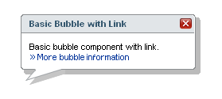.
 Make the "More" link's tool tip as specific as possible. For example, the tool tip for a "More server information " link might be:
Make the "More" link's tool tip as specific as possible. For example, the tool tip for a "More server information " link might be:
Shows more information about the server. (Opens a New Window)
 When the "More" link is clicked, dismiss the pop-up bubble unless the material in the new window that is displayed has content that is needed in conjunction with the information in the pop-up bubble, or if is important for the user to be able to return to the original window with the pop-up bubble still displayed.
When the "More" link is clicked, dismiss the pop-up bubble unless the material in the new window that is displayed has content that is needed in conjunction with the information in the pop-up bubble, or if is important for the user to be able to return to the original window with the pop-up bubble still displayed.
Enabling the pop-up bubble to remain displayed when a new window is invoked makes it such that upon return to the pop-up bubble, the user cannot simply move the mouse pointer outside of the bubble to close it. The user must explicitly click the Close button, click outside of the bubble, or invoke another pop-up bubble to dismiss the pop-up bubble.
 Use caution when deciding to keep a pop-up bubble displayed when a new window is invoked. If all pop-up bubbles within a page or application do not behave the same way, the user may notice the inconsistency and it could be confusing.
Use caution when deciding to keep a pop-up bubble displayed when a new window is invoked. If all pop-up bubbles within a page or application do not behave the same way, the user may notice the inconsistency and it could be confusing.
 To enable the pop-up bubble to remain displayed when a new window is invoked, set the "autoClose" attribute to: autoClose="false".
To enable the pop-up bubble to remain displayed when a new window is invoked, set the "autoClose" attribute to: autoClose="false".
| [ Table of Contents | 0 Revision History | 1 Introduction | 2 Visual Design | 3 Windows and Pages | 4 Mastheads | 5 Top-Level Navigation | 6 Content Area | 7 Simple Elements | 8 Complex Elements | 9 Tables | 10 Topology | 11 Contextual Help | 12 Search | 13 Wizards | 14 Alerts and Messages | 15 Progress Indicators | 16 Alarms and Status Indicators | 17 Login Page | 18 Version Page | Appendices ] |
| Privacy Policy | Terms of Use | Trademarks | Copyright 2007 Sun Microsystems, Inc. |